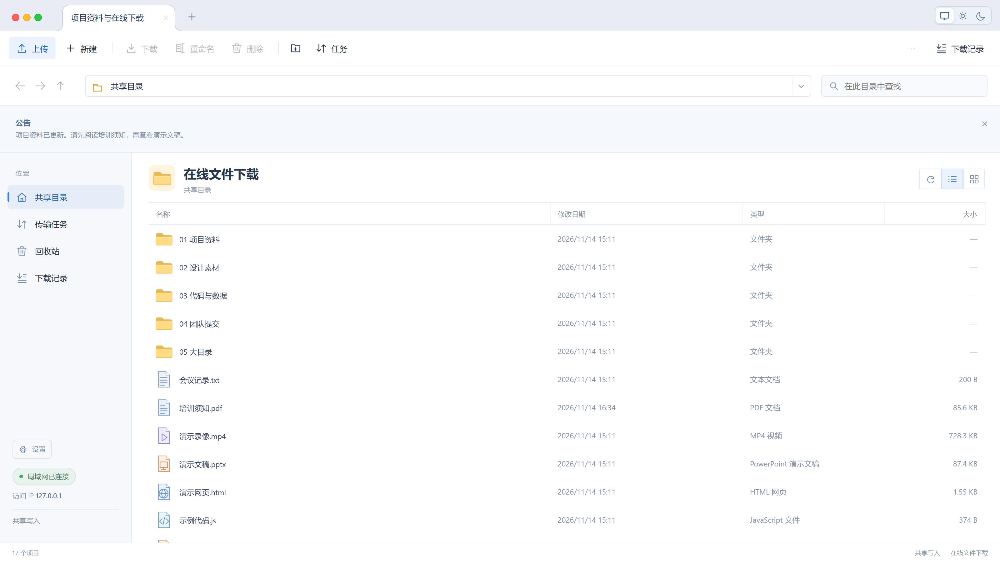

01 / 09 · LOCAL HTTP SERVER
一个程序，两种服务
FileTrans × Server
LOCAL HTTP SERVER · v3.5.1
HttpLocalServer
一个程序，两种服务。
FileTrans
共享文件，浏览与交付
Server
托管网页与轻量应用
C / C++ · 一个原生可执行文件
02 / 09 · FILETRANS
启动，即提供服务
默认8000端口 · 监听与目录均可配置
TERMINAL · 启动示意
> HttpLocalServer --root ./share
FileTrans · 0.0.0.0:8000HTTP service ready
右侧为实际程序运行界面。命令行片段为启动示意。

03 / 09 · FILETRANS
扫一扫，直接打开
网页与 CLI 都能扫码，手机无需手动输入地址。
网页二维码

https://example.com
CLI--show-cli-qr
https://example.com网页与 CLI，都能交出入口。
扫一扫
扫一扫
识别到网页example.com打开网页 →
⌕example.com↻

扫码流程示意 · 示例地址 example.com
04 / 09 · FILETRANS
把路径留在标签里
实时拖动 · 独立历史 · 可输入路径

可拖动标签路径历史最多 12 个
05 / 09 · FILETRANS
大文件，按块抵达
浏览器管理下载，Range与版本检查守住边界。
主机
按区间读取
Range: bytes=…
1
2
3
4
5
6
浏览器
管理普通下载
把文件分段传输
断点续传，按请求继续
机制示意；普通下载的进度、暂停与恢复由浏览器管理。
06 / 09 · FILETRANS
文档，连续阅读
Word与PDF · 选择复制 · 自适应页面
看清内容，再继续。
文档、演示、表格与媒体，有各自适合的预览方式。

07 / 09 · CONTROL
开放多少，由你设定
只读、共享写入，或按IP独立提交。
独立模式下主机保留全共享管理范围；冻结与显式只读规则仍生效。
08 / 09 · SERVER
一个ZIP，装下轻量应用
公开前端，保留后台，独立管理来源。
demo-app.zipZIP APP
公开前端
public/index.htmlpublic/app.js · assets/
后台模块 · 不公开
server.qjslib/ · application.wasm
局域网应用
IP : 应用端口请求经过登录与访问策略
独立主机控制来源
localhost : 管理端口设置 / MCP · 仅回环默认仅公开 public/；真实文件共享 API 需显式开放，应用不获得主机管理权限。
09 / 09 · LOCAL HTTP SERVER
让本机，成为服务入口
HttpLocalServer
LOCAL. HTTP. CONNECTED.
HttpLocalServer
让本机，成为服务入口。
FileTrans
共享文件，浏览与交付
Server
托管网页与轻量应用
第三方组件仍遵循各自许可与通知要求。
文件与网页，交给同一个局域网入口。
启动HttpLocalServer，
用浏览器访问。一个程序，先把服务提供出来。
扫一扫，直接打开。
熟悉的管理器，多标签、检索与按需列表，
找到需要的内容。
大文件分块传输，目录按能力保存，
写操作先确认冲突。
先预览，再下载。文档、表格、媒体和代码，
各有打开方式。
谁能写、开放什么、资源怎么用，由主机设定。
它也能托管网站，
以可信脚本和受限组件扩展轻量应用。
让本机，成为局域网的服务入口。
HttpLocalServer。
HTTPLOCALSERVER · OVERVIEW
v3.5.1